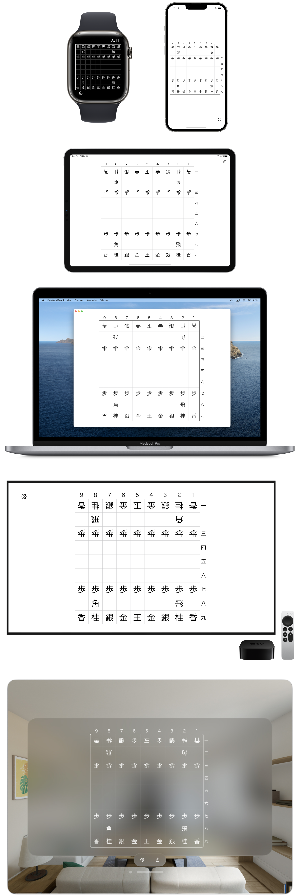
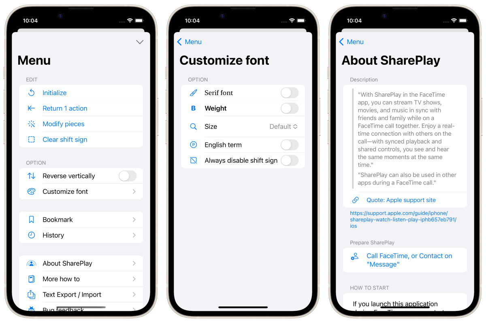

最简单的将棋棋盘应用程序


这款应用程序适用于 iPhone、iPad、Mac、Apple Watch、Apple TV 和 Apple Vision Pro。
棋子可自由移动。可删除或添加任何棋子。
自定义棋子字体，更改英文符号，打造属于自己的将棋棋盘。

多个玩家可同时操作一个将棋盘。
您可以使用 FaceTime 或信息应用程序通过互联网与朋友共享将棋盘。
SharePlay 功能适用于各种情况，例如与一大群朋友一起解决将棋问题，以及 "两个人之间的简单游戏"。
只需将两部 iPhone 靠近并按下按钮一次，即可开始 SharePlay。(仅限使用 iOS 17 或更高版本的 iPhone）。

Apple Vision Pro 支持 "空间 SharePlay"。

兼容 iPhone、iPad、Apple Watch、Mac、Apple TV 和 Apple Vision Pro。
通过 iCloud 在设备之间同步电台。

可将电路板导出为图像。
黑板可以文本形式导出和导入。
☗角͙
－－－－－－－－－
香͙桂͙銀͙金͙王͙金͙銀͙桂͙香͙
飛͙
歩͙歩͙歩͙歩͙歩͙歩͙ 歩͙歩͙
歩͙
歩
歩歩 歩歩歩歩歩歩
馬͙ 飛
香桂銀金王金銀桂香
－－－－－－－－－
☖
免费